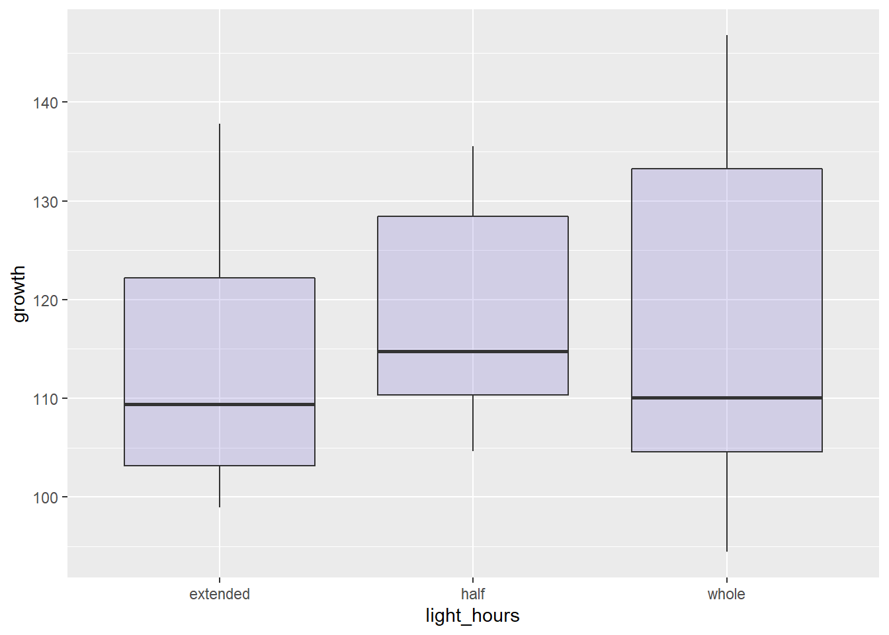
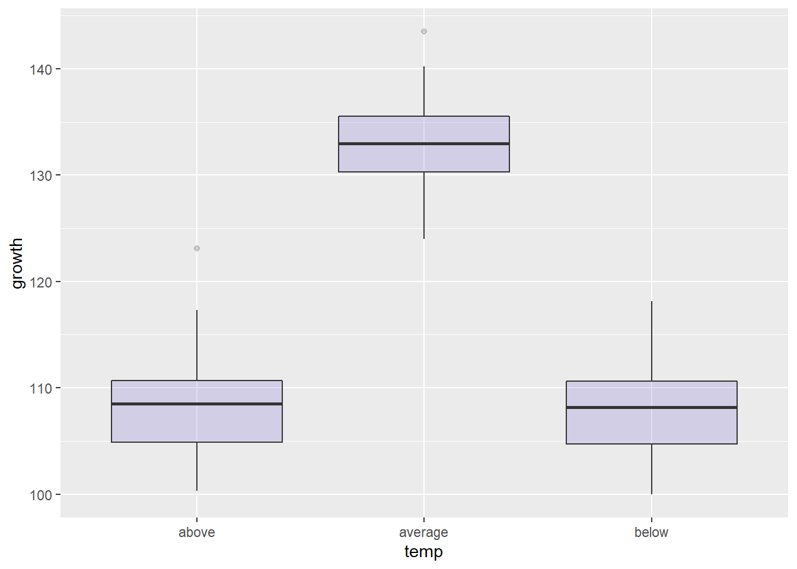
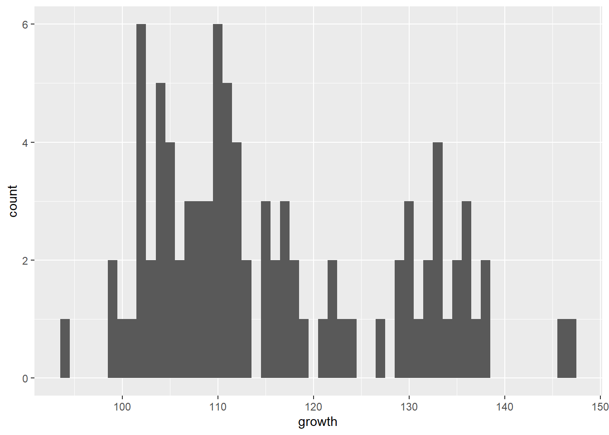
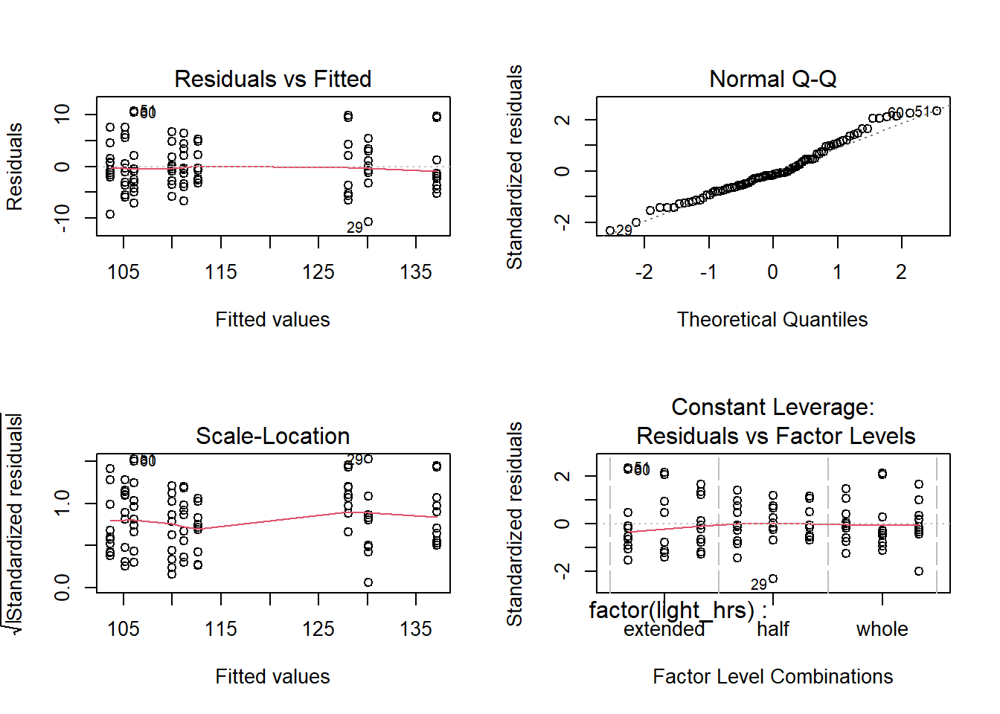

You should have R and Rstudio installed. We will be working with R within the Rstudio environment.
Determine which directory you are in:
getwd()## [1] "C:/Users/latreese.denson/Documents/GitHub/PuttingTheSEAInCode"ProTip: Use Ctrl + Enter (Windows) or Cmd + Enter (Mac) to run the current line of code using a keyboard shortcut.
Not the right directory? That’s fine–let’s change it!
To change or set the directory in R use the setwd() function.
# The file path for your desktop
setwd("/Users/Me/Desktop")Note: In this character string, you can only use a “/” or “\\” between folder names.
For example, to get the directory to a specific folder:
setwd() parentheses and add your folder name (e.g.,“\\SpecificFolder”).To keep things tidy, create another folder specifically for today’s workshop. This can be done by creating the object todays.file where you can change the name whenever you wish. You can also make a string of file names or whatever you want using c().
todays.file = "SEAInCode"You can also make a string of file names or whatever you want using c(). This will come in handy later.
Use dir.create() to make the new folder then set the working directory to todays.file
dir.create(todays.file)
setwd(todays.file)ProTip: R does not like spaces. Use underscores instead.
Check to see if you are in the right place using getwd(), then use the function dir() to see what is in the folder.
dir()## [1] "_config.yml" "_site.yml" "A"
## [4] "B" "boxplot_light.tiff" "boxplot_temp.tiff"
## [7] "C" "growth_data.csv" "ModelCoefficeints.csv"
## [10] "modeldiagnostics.tiff" "README.md" "SEAInCodeRIntro.html"
## [13] "SEAInCodeRIntro.md" "SEAInCodeRIntro.Rmd" "SEAInCodeRIntro_files"
## [16] "site_libs"ProTip: Messed up? Want to move up one directory? No problem! Run setwd("..").
There are millions of R packages designed to do all kinds of data analyses. Two packages that I have grown fond of for manipulating and visualizing data are dplyr and ggplot2. Fortunately, somebody decided to bundle these packages and a few others in what is called the “tidyverse”. We can install this package using install.packages().
dplyr: a package for data manipulation
ggplot2: a package for creating graphics
tidyverse: the data analysis super package!
install.packages("tidyverse")Note: Installing the package only needs to be done once.
Load the package every time a new R session is started using library().
## Warning: package 'tidyverse' was built under R version 4.0.3## -- Attaching packages ------------------------------------------------ tidyverse 1.3.0 --## v ggplot2 3.3.2 v purrr 0.3.4
## v tibble 3.0.3 v dplyr 1.0.2
## v tidyr 1.1.2 v stringr 1.4.0
## v readr 1.3.1 v forcats 0.5.0## Warning: package 'ggplot2' was built under R version 4.0.2## Warning: package 'tibble' was built under R version 4.0.2## Warning: package 'tidyr' was built under R version 4.0.3## Warning: package 'readr' was built under R version 4.0.2## Warning: package 'purrr' was built under R version 4.0.2## Warning: package 'dplyr' was built under R version 4.0.3## Warning: package 'stringr' was built under R version 4.0.2## Warning: package 'forcats' was built under R version 4.0.3## -- Conflicts --------------------------------------------------- tidyverse_conflicts() --
## x dplyr::filter() masks stats::filter()
## x dplyr::lag() masks stats::lag()Note: If you are ever wondering how to use these packages check out the cheat sheets:
… or Google it!
Read in the growth_data from Github using read.csv() and give it the object name “data”:
data = read.csv("https://raw.githubusercontent.com/latreesedenson/SEAinCode/main/growth_data.csv")
data=as.data.frame(data)Note: You could also copy and paste the data from the web browser into an excel file, change the format to comma delimited, saved it as a csv file and then read it in using read.csv(). That way you would have a copy of the data on your local drive.
Make sure the data was read in correctly using the function head().
head(data)## X light_hrs temp_range growth species
## 1 1 whole average 146.7802 A
## 2 2 half average 133.1117 A
## 3 3 extended average 137.4000 A
## 4 4 whole above 104.2082 A
## 5 5 half above 113.2610 A
## 6 6 extended above 103.5689 AProTip: Not sure what a function does? Type ?head() into the console and see what pops up in the help menu. Scroll down to the bottom–there are often examples of how to use the function that you can practice with.
What are the column names? Is everything there that should be there?
names(data)## [1] "X" "light_hrs" "temp_range" "growth" "species"What are the dimensions of the dataset, how many rows and columns?
dim(data)## [1] 270 5Let’s get some basic summary statistics from our data:minimum, maximum and mean.
summary(data)## X light_hrs temp_range growth
## Min. : 1.000 Length:270 Length:270 Min. : 63.19
## 1st Qu.: 3.413 Class :character Class :character 1st Qu.: 95.93
## Median : 5.805 Mode :character Mode :character Median :105.21
## Mean : 8.559 Mean :103.12
## 3rd Qu.: 8.217 3rd Qu.:111.79
## Max. :92.000 Max. :146.78
## species
## Length:270
## Class :character
## Mode :character
##
##
## You will notice there are multiple species here and some NAs in the data. Let’s work with the first species and remove the bad records. We will use the pipe operator %>% from the magrittr package within the tidyverse package to do this. This syntax leads to code that is easier to write and to read. Use the keyboard shortcut: Ctrl + Shift + M (Windows) or Cmd + Shift + M (Mac) to get the pipe operator.
Species_A_Clean = data %>% filter(species =="A",!is.na(light_hrs))
head(Species_A_Clean)## X light_hrs temp_range growth species
## 1 1 whole average 146.7802 A
## 2 2 half average 133.1117 A
## 3 3 extended average 137.4000 A
## 4 4 whole above 104.2082 A
## 5 5 half above 113.2610 A
## 6 6 extended above 103.5689 Adim(Species_A_Clean)## [1] 90 5summary(Species_A_Clean)## X light_hrs temp_range growth
## Min. :1.000 Length:90 Length:90 Min. : 94.43
## 1st Qu.:3.225 Class :character Class :character 1st Qu.:105.63
## Median :5.450 Mode :character Mode :character Median :111.79
## Mean :5.450 Mean :115.99
## 3rd Qu.:7.675 3rd Qu.:128.46
## Max. :9.900 Max. :146.78
## species
## Length:90
## Class :character
## Mode :character
##
##
## Let’s do a boxplot of our response vs. our explanatory variables. Here we are using ggplot2 but I also provide code for using Base R. You will notice that I have commented out some lines of code using ‘#’. This allows me to block out lines that I don’t want to run as well as create comments.
ggplot(Species_A_Clean, aes(x=as.factor(light_hrs), y=growth)) +
geom_boxplot(fill="slateblue", alpha=0.2) + xlab("light_hours")
# To save to a file for viewing later we use the function ggsave()
# The .tiff is the type of file, you can also use jpg
# .tiff files are good for publication graphics
# ggsave("boxplot_light.tiff")
ggplot(Species_A_Clean, aes(x=as.factor(temp_range), y=growth)) +
geom_boxplot(fill="slateblue", alpha=0.2) + xlab("temp")
# ggsave("boxplot_temp.tiff")
# Here is the code to create a boxplot and save it in Base R
# Remove the # to run these 3 lines
# tiff("boxplot.tiff")
# boxplot(growth~temp_range,data=Species_A_Clean,xlab="temp_range", ylab="growth(wt")
# dev.off() Notice the way we save graphics is different depending on the package we are using. Also dev.off() closes all graphics devices so you can start a fresh graph next time.
Create a histogram of the data using the geom_histogram() function. Change the binwidth to see what happens.
ggplot(Species_A_Clean, aes(x = growth)) +
geom_histogram(binwidth = 1)
# You can remove the '#' in the line below if you want to save this
# ggsave("DataDistribution.tiff")
# Base R
# hist(Species_A_Clean$growth, breaks=1, col="darkgrey", main = "", xlab="growth") We use the lm() function which needs model and the data as it’s input. The model is setup using a \(\sim\), where \(y\sim x\) means that Y is a function of X.
lm(y ~ x1 + x2 + x3, Data = Data)
Let’s run a model with our species data. We tell R that we have a categorical factor with multiple levels such as diet quality by using the function factor().
SpeciesA.lm = lm(growth ~ factor(light_hrs)*factor(temp_range), data = Species_A_Clean)To get a summary of the linear model output we use the function summary().
sum.mod = summary(SpeciesA.lm)
####
# Additional functions you may find useful in the future
####
# coefficients(fit) # model coefficients
# confint(fit, level=0.95) # CIs for model parameters
# fitted(fit) # predicted values
# residuals(fit) # residuals
# anova(fit) # anova table
####Here you have your important outputs to make a conclusion with.
Let’s save some of that information to an excel file. Note: you cannot save the entire output to a csv using the lines below. You may need some other functions.
results = sum.mod$coefficients
out = as.data.frame(results)
write.csv(out,"ModelCoefficeints.csv") # this is an excel file you can also write to a text file using write.table() and .txt file name instead of csvLet’s plot this relationship and some diagnostics of the fit to the model.
# tiff("ModelDiagnostics.tiff") # Remember you can save this graphic
par(mfrow=c(2,2)) # set up how we want them to be plotted: 2 rows 2 columns
plot(SpeciesA.lm)
dev.off() # close the plotting window and resets things## null device
## 1This produces 4 main plots each used to diagnose the fit of the model to the data.
Let’ say you now need to do this for the two other species, nobody wants to write all that code out again. Now we will build our own function and if there is time we will loop through and analyze the data for all of the species with the click of a button.
Just like plot(), header(), summary(), dim(), etc. are all functions, we can make our own functions too. Why do we make functions?
1.There is no available function to do what you want to do.
2.Work smarter – not harder! You have a task that needs to be repeated, and you do not want to keep writing the same lines of code over and over again.
Functions must have a name and arguments, and they must return something. Arguments are the inputs you plan to use in your function. We often use the function return() to have our functions “print” to the console or pass something on to another function. Example layout:
func.name = function(arg1,arg2)
{ # bracket to start function
# code to do something, here
return (something)
} # bracket to end functionLet’s do the following in a function: 1. Select the species of interest 2. Produce plots exploring the response vs the explanatory variables 4. Fit the full linear model and export a table 5. Plot the diagnostics
do.analysis = function(species.name = "B", input.data = data)
{
# Use piping to select the data related to the species of choice in the first argument
species.data = input.data %>% filter(species == species.name)
# Create boxplots and save them for publication
ggplot(species.data, aes(x=as.factor(light_hrs), y=growth)) +
geom_boxplot(fill="slateblue", alpha=0.2) + xlab("light_hours")
ggsave("boxplot_light.tiff")
ggplot(species.data, aes(x=as.factor(temp_range), y=growth))+
geom_boxplot(fill="slateblue", alpha=0.2) + xlab("temp")
ggsave("boxplot_temp.tiff")
# Fit the model and save some of the results
final.mod = lm(growth~light_hrs+temp_range,data = species.data)
sum.mod = summary(final.mod)
results = sum.mod$coefficients
out = as.data.frame(results)
write.csv(out,"ModelCoefficeints.csv")
# Plot and save the diagnostics
tiff("modeldiagnostics.tiff")
par(mfrow=c(2,2))
plot(final.mod)
dev.off()
# use cat() to print a message when you are done with your analyses
cat(paste("\nmodel outputs for species",species.name,"are complete!\n"))
}
# Try out your function
do.analysis("A",data)## Saving 7 x 5 in image
## Saving 7 x 5 in image## hat values (leverages) are all = 0.05555556
## and there are no factor predictors; no plot no. 5##
## model outputs for species A are complete!There are various types of loops but “for” loops are most common. You use loops when you want to do something iteratively. For loops have the following structure:
for (i in 0:5) # a variable and range of values it will take
{ # a bracket to start
#some calculation or function to do something
} # a bracket to end the for loopHere “i” sequentially becomes a number from 0 to 5 and is used in each iteration of the loop.
Let’s try a simple example where we want to add i to 5. Our output should consist of a list of values. We’ll use the cat() function so we can see what the loop is doing.
for (i in 0:5)
{
x = i + 5 # Do something to i, iteratively
cat(x) # see what happens if you take this out
# I like to print what I am doing inside of a loop ...
# uncomment the next line to see what it does
# cat(paste("i= ", i, "and i + 5 =", x,"\n"))
} # end for loop## 5678910Now for the ultimate test Use what we have learned so far to perform the analyses function on each species by using a loop.
species.list = c("A","B","C") # vector of species names to loop through
for (i.species in 1:length(species.list))
{
# i.species = 1 # test to see if your loop is working, it should change the current.species object
current.species = species.list[i.species] # good practice to set an object name once and use it in multiple places
dir.create(current.species) # create a new folder to work in or else things will overwrite because they have the same name
setwd(current.species) # work in the newly created directory
dir()
do.analysis(current.species,data) # use the function we created previously
setwd("..") # move back to the main folder to restart the loop
}## Saving 7 x 5 in image
## Saving 7 x 5 in image## hat values (leverages) are all = 0.05555556
## and there are no factor predictors; no plot no. 5##
## model outputs for species A are complete!## Saving 7 x 5 in image## Saving 7 x 5 in image## hat values (leverages) are all = 0.05555556
## and there are no factor predictors; no plot no. 5##
## model outputs for species B are complete!## Saving 7 x 5 in image## Saving 7 x 5 in image## hat values (leverages) are all = 0.05555556
## and there are no factor predictors; no plot no. 5##
## model outputs for species C are complete!